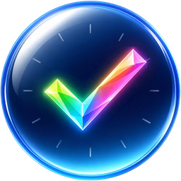
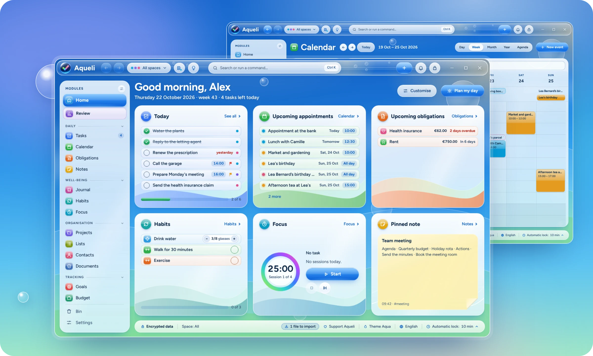
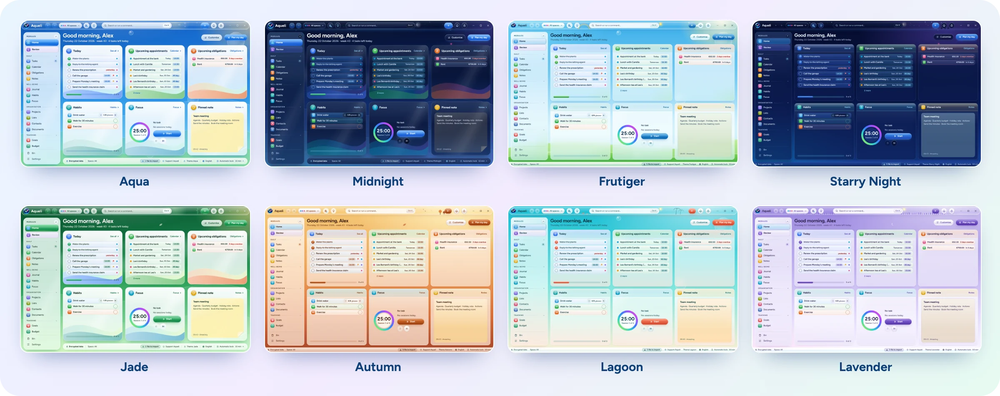
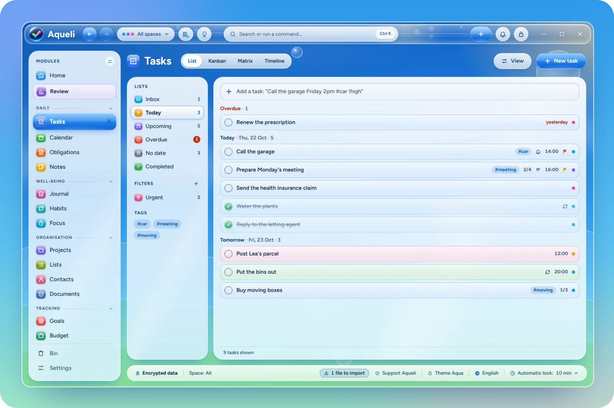
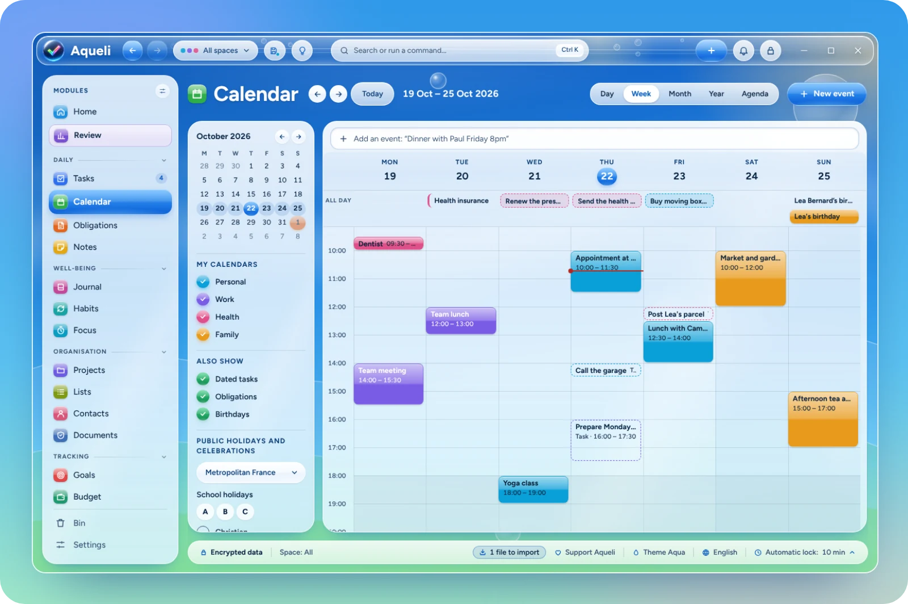
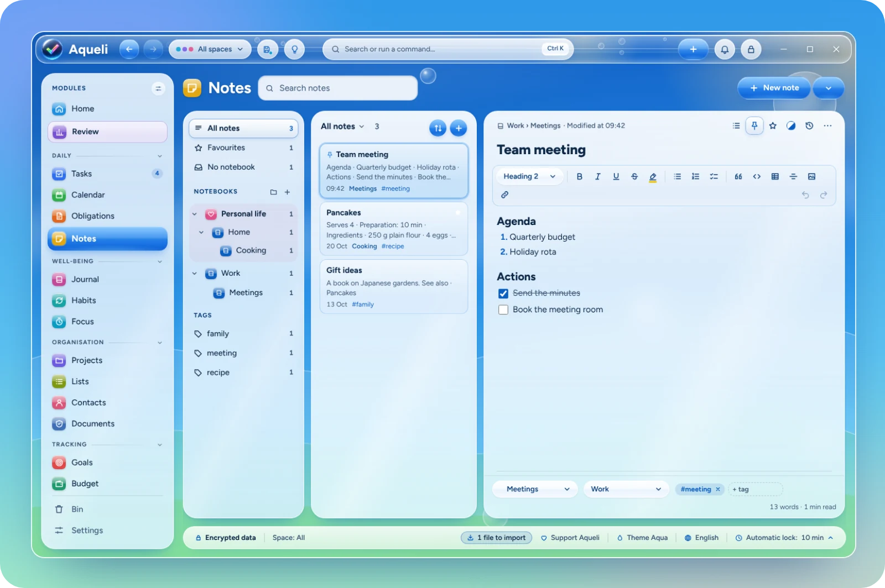
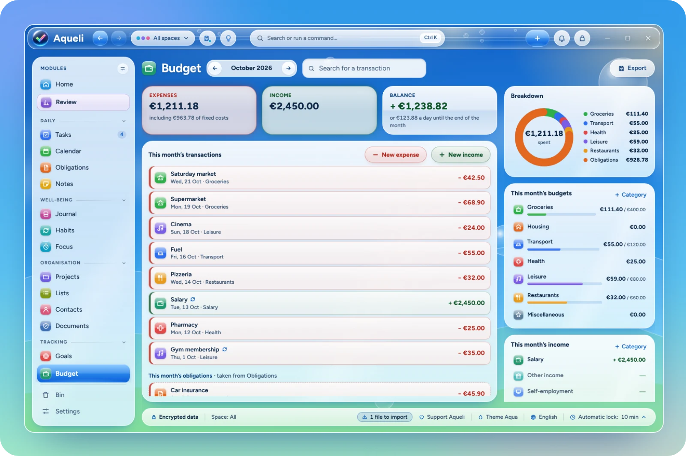

Encrypted by default
Each account is a SQLCipher database (AES-256), opened by a key derived from your password with Argon2id. Windows Hello unlocks it day to day.

Aqueli GitHubA private, all-in-one organiser for Windows.
Tasks, calendar, notes, habits and budget in one app. Encrypted on your PC, entirely offline, with no account and no subscription.

Fifteen modules, linked together. Hide the ones you do not use.
Today at a glance, in cards you arrange and resize.
Natural-language entry, subtasks, repeats and reminders. List, board and matrix views.
Day, week, month and year views, with public and school holidays.
Bills, subscriptions, contracts and papers, with reminders before each deadline.
Headings, checklists and tables, notebooks, links between notes and version history.
One page a day, with mood, energy and gratitude.
Yes/no or numeric habits, streaks, records and a year map.
25/5, 50/10 or custom cycles with calm soundscapes.
A project's tasks, notes and documents, its progress and reusable templates.
Shopping, books, films or gifts, with custom columns and a gallery view.
Contact cards, birthdays in the calendar and the history of linked items.
Important files kept inside the encrypted database, with expiry reminders.
Goals for the year, quarter or month, with steps and automatic progress.
A monthly budget by category, recurring items and bank statement import.
A guided weekly review, charts and a monthly PDF report.
Each account is a SQLCipher database (AES-256), opened by a key derived from your password with Argon2id. Windows Hello unlocks it day to day.
A command palette (Ctrl+K), shortcuts you can change, Ctrl+Z for every change, and quick capture from anywhere in Windows.
Link a task to a note, an event to a contact, a bill to a document. One search finds them all, with or without accents.
Bring in tasks, events, notes and contacts from Excel, CSV, text, .ics and .vcf files, with a preview before anything is added.
Chosen when you install, and changeable at any time. The import guide is translated too.
Full keyboard navigation, a high-contrast mode that follows Windows, and options to reduce motion and transparency.
Light and dark, each with its own sky, illustrations and sounds. Themes can follow the time of day, the seasons or the holidays, and you can design your own.





There is no "forgot my password" link: a 24-character recovery key, shown when you create your account, is the only other way in.
Get the installer from the latest release. It installs Aqueli for your Windows user account, without administrator rights, and starts by asking for your language.
Download for WindowsWindows 11, 64-bit. The installer is not code-signed yet: if SmartScreen shows "Windows protected your PC", choose More info, then Run anyway. Each release lists the SHA-256 checksum of the installer.
Aqueli is free and made by one person. If it is useful to you, you can support its development.
Support on Ko-fi